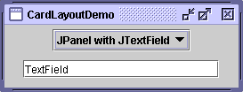
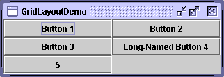

Feedback Form
|
|
Start of Tutorial > Start of Trail > Start of Lesson |
Search
Feedback Form |
Several AWT and Swing classes provide layout managers for general use:
This section shows example GUIs that use these layout managers, and tells you where to find the how-to page for each layout manager. You can find links for running the examples in the how-to pages and the example index.
Every content pane is initialized to use a BorderLayout. (As Using Top-Level Containersexplains, the content pane is the main container in all frames, applets, and dialogs.) A
BorderLayoutplaces components in up to five areas: top, bottom, left, right, and center. All extra space is placed in the center area. For further details, see How to Use BorderLayout.
The BoxLayoutclass puts components in a single row or column. It respects the components' requested maximum sizes and also lets you align components. For further details, see How to Use BoxLayout.

The
CardLayoutclass lets you implement an area that contains different components at different times. ACardLayoutis often controlled by a combo box, with the state of the combo box determining which panel (group of components) theCardLayoutdisplays. An alternative to usingCardLayoutis using a tabbed pane
FlowLayoutis the default layout manager for everyJPanel. It simply lays out components in a single row, starting a new row if its container isn't sufficiently wide. Both panels in CardLayoutDemo, shown previously, useFlowLayout. For further details, see How to Use FlowLayout.
GridBagLayoutis a sophisticated, flexible layout manager. It aligns components by placing them within a grid of cells, allowing some components to span more than one cell. The rows in the grid can have different heights, and grid columns can have different widths. For further details, see How to Use GridBagLayout.
 GridLayoutsimply makes a bunch of components equal in size and displays them in the requested number of rows and columns. For further details, see How to Use GridLayout.
SpringLayoutis a flexible layout manager designed for use by GUI builders. It lets you specify precise relationships between the edges of components under its control. For example, you might define that the left edge of one component is a certain distance (which can be dynamically calculated) from the right edge of a second component. For further details, see How to Use SpringLayout.
|
|
Start of Tutorial > Start of Trail > Start of Lesson |
Search
Feedback Form |
Copyright 1995-2004 Sun Microsystems, Inc. All rights reserved.